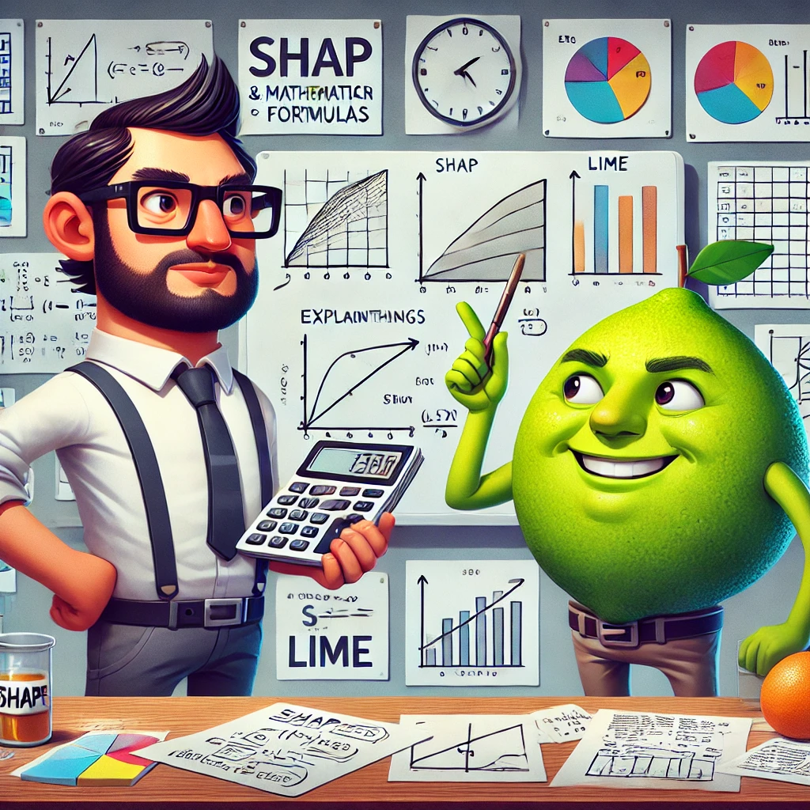

Exploring the Deep Dive into Model Interpretability with SHAP and LIME: A Technical Walkthrough
In the world of machine learning, we often find ourselves building powerful models that predict with high accuracy, but as the complexity of these models grows, so does the need for interpretability. In this post, we’ll dive into two popular techniques—SHAP and LIME—that help shed light on how our models make decisions, all while exploring their unique strengths in a fun and insightful way.

Exploring the Deep Dive into Model Interpretability with SHAP and LIME: A Technical Walkthrough
As data scientists, we often find ourselves on a relentless pursuit of accuracy. Whether we are working on predictive models for business, healthcare, or autonomous vehicles, the end goal is often to craft a model that performs well on unseen data. However, as these models become more complex, particularly with the rise of ensemble methods like Random Forests and gradient boosting, or deep learning models such as Neural Networks, we encounter an increasing demand for interpretability. Understanding why and how our models make predictions is crucial, not just for model improvement, but for building trust with stakeholders.
In this post, we’ll take a deep dive into two powerful techniques for model interpretability: SHAP (SHapley Additive exPlanations) and LIME (Local Interpretable Model-agnostic Explanations). These methods help us break down the “black-box” nature of models, offering transparency into how input features influence predictions.
Why Model Interpretability Matters
Before we jump into the techniques themselves, it’s important to understand why interpretability is a critical aspect of data science:
- Trust and Accountability: In regulated industries (like finance or healthcare), explaining the reasoning behind a model’s prediction is essential for legal and ethical reasons.
- Model Diagnostics: Interpretation can highlight issues like feature leakage, biases, or areas where the model can be improved.
- Decision-Making: In business settings, stakeholders need confidence that a model is making reasonable decisions based on actionable insights, not just statistical noise.
SHAP: A Game-Changer in Explainability
SHAP is rooted in Shapley values, a concept borrowed from cooperative game theory. These values provide a way to fairly attribute the contribution of each feature to the model’s predictions. The brilliance of SHAP is in its consistency and local accuracy—it ensures that the sum of the individual feature contributions equals the model’s prediction, and that features with higher impact are assigned higher values.
SHAP Value Decomposition
Let’s assume a model makes a prediction for a given instance. SHAP assigns a value to each feature based on its marginal contribution to the prediction. This is done by comparing how the model’s prediction changes when we include or exclude a feature in the model.
The SHAP value for a feature j for a specific instance i is defined as:
\[ \phi_j(f) = \sum_{S \subseteq N \setminus \{j\}} \frac{|S|!(|N|-|S|-1)!}{|N|!} \left[f(S \cup \{j\}) - f(S)\right] \]
Where: - f(S) is the model’s prediction when the set of features S is used. - |S| and |N| are the sizes of the subsets of features and the total set of features, respectively.
What’s fascinating is that this decomposition ensures fairness: each feature is assigned a value based on its actual contribution to the prediction, irrespective of other features. This is particularly useful in ensemble models, where interactions between features are complex and hard to visualize.
Visualizing SHAP Values
One of the key advantages of SHAP is that it provides a variety of visualization tools to make the results more digestible:
SHAP Summary Plots: These plots provide a bird’s-eye view of how each feature impacts model predictions across the entire dataset. The color of each point represents the feature value (e.g., blue for lower values and red for higher values), and the horizontal position shows the SHAP value.
SHAP Force Plots: Force plots provide an intuitive, visual representation of how a single feature contributes to a prediction. They stack feature contributions on top of each other, showing how individual features push the model’s prediction up or down.
LIME: Explaining Models Locally
While SHAP provides a global explanation of model behavior, LIME takes a more local approach. LIME (Local Interpretable Model-agnostic Explanations) explains individual predictions by approximating the complex model with a simpler, interpretable surrogate model locally around the prediction of interest.
The key idea behind LIME is to perturb the input data and observe how the model’s prediction changes. It then fits an interpretable surrogate model (such as a linear regression or decision tree) to these perturbed data points.
The Process
Perturbation: LIME generates new data points by perturbing the original data instance. For instance, in the case of tabular data, it might randomly shuffle values in the dataset or create synthetic samples around the instance being explained.
Model Prediction: The model’s predictions are gathered for these perturbed samples.
Surrogate Model: LIME fits a simple interpretable model (such as a linear model or a decision tree) to the new dataset consisting of the perturbed samples and their corresponding predictions.
Explanation: The surrogate model is then used to explain how features contributed to the final prediction.
Since LIME works locally, it’s a great tool when the user wants to understand how a model makes predictions for specific instances, even if the model itself is too complex to explain directly.
Comparing SHAP and LIME
While both SHAP and LIME are model-agnostic and focus on explaining black-box models, they differ in their approaches:
- Interpretability Scope: SHAP provides a global explanation by offering insights into how each feature affects the model’s overall behavior across the dataset, whereas LIME focuses on local explanations for individual predictions.
- Accuracy: SHAP is more consistent and mathematically grounded, as it guarantees that the sum of SHAP values equals the prediction. LIME, on the other hand, is an approximation technique that relies on fitting a surrogate model.
- Computational Complexity: SHAP can be computationally expensive for large datasets, particularly in tree-based models where it has to compute values over all possible subsets of features. LIME is generally more scalable, though it can still be slow for high-dimensional data due to the need to generate many perturbed samples.
Conclusion: Which Tool Should You Use?
The choice between SHAP and LIME depends on your goals and the specific context of your problem:
- Use SHAP when you need global interpretability and fairness in feature attribution. It’s perfect for understanding complex models at scale and diagnosing model behavior.
- Use LIME when you need to explain individual predictions and are working with a model where you want a simpler, local explanation that is more intuitive for stakeholders.
Ultimately, the landscape of model interpretability is growing, and tools like SHAP and LIME represent the cutting edge in making machine learning both powerful and understandable. As the demand for explainable AI increases, these tools will likely become part of every data scientist’s toolkit.
Further Reading and Resources
- SHAP GitHub Repository
- LIME GitHub Repository
- “Interpretable Machine Learning” by Christoph Molnar (an excellent book for a deeper dive into model explainability).
Happy coding, and may your models be both accurate and explainable!